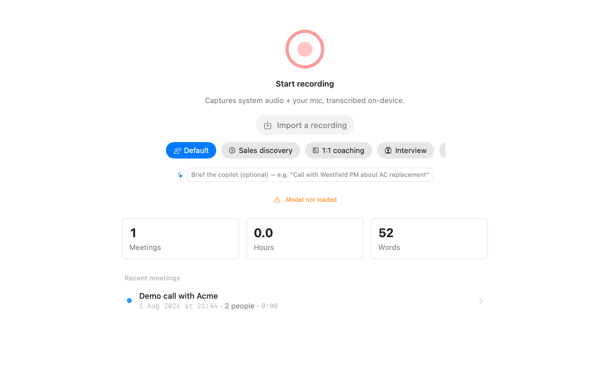

Grab the latest DMG from the
releases page, open
it, and drag Parrot into Applications. That's it. If you'd rather build from
source, clone the repo and run make run.
On first launch Parrot walks you through two macOS permissions. Both are needed to record a call properly:
Transcription happens on your Mac with Whisper, so you pick which model to
use during onboarding. base is a good start: small, quick, decent
accuracy. If your Mac has Apple Silicon and some room to spare,
large-v3-turbo is noticeably more accurate and still fast. The
model downloads once on first use and lives on your disk after that, so
transcription works offline.
You can switch models any time in Settings → Transcription.

Hit the big record button and talk. The transcript shows up as you speak. When you're curious about the AI side of Parrot, read Setting up the Copilot. It's optional and off by default.